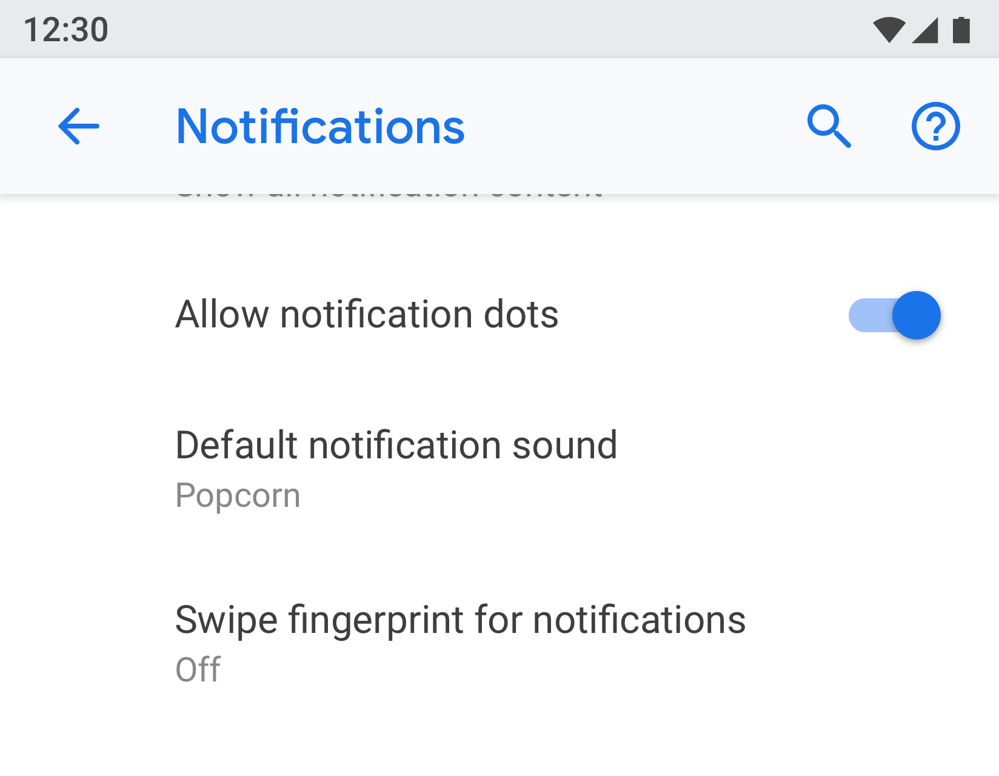
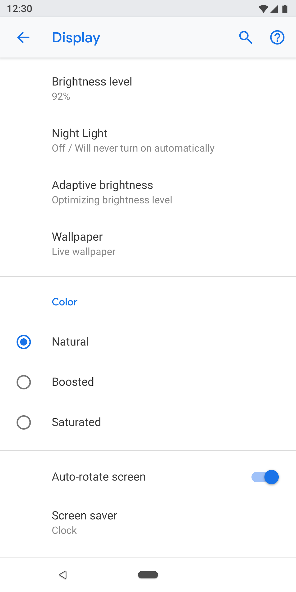
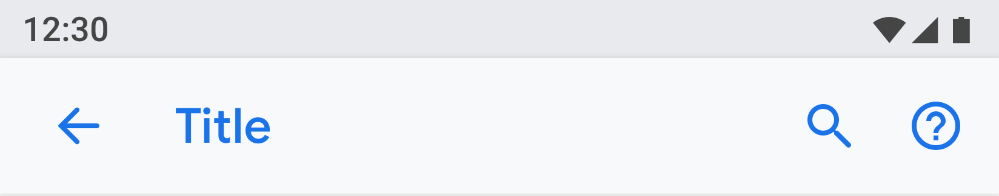
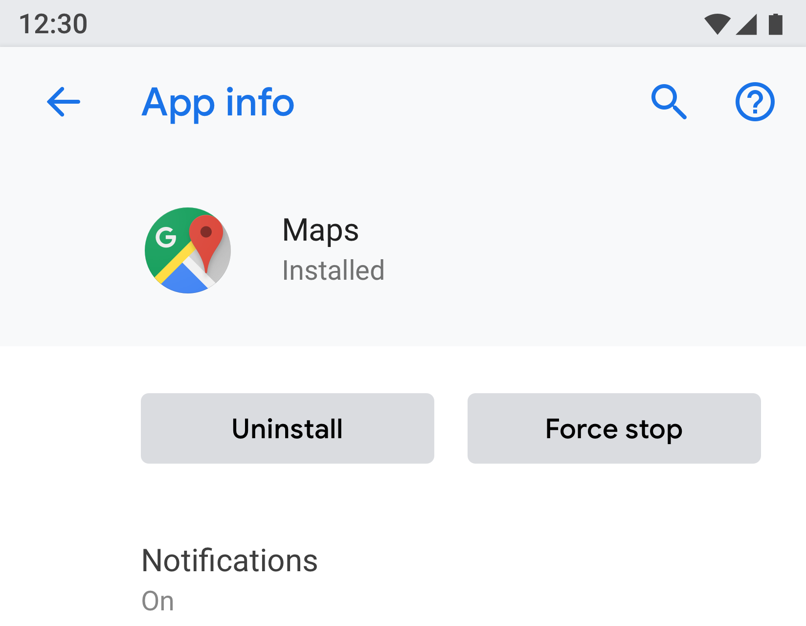
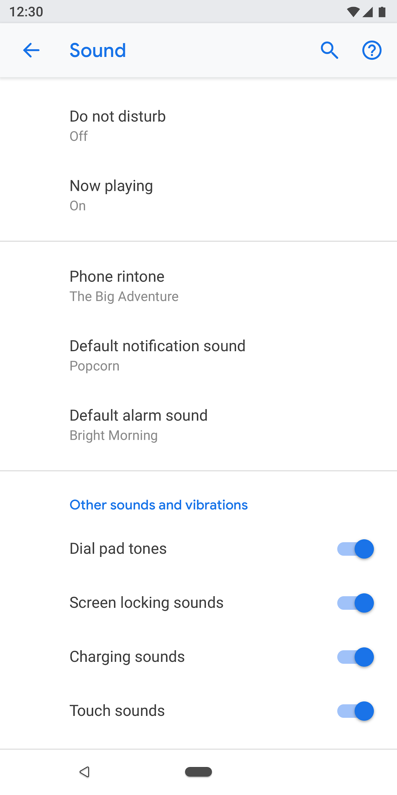
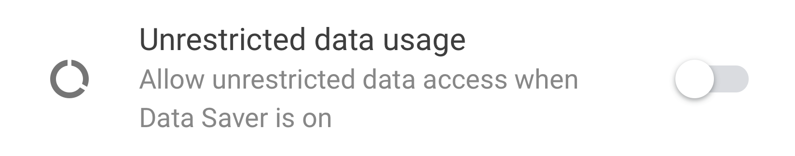
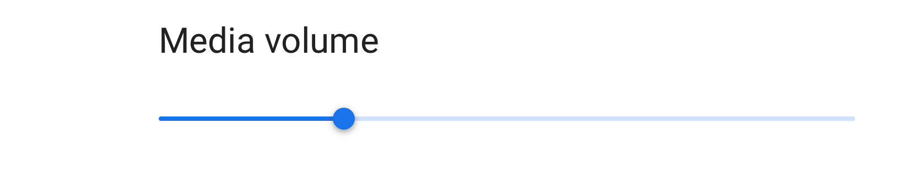
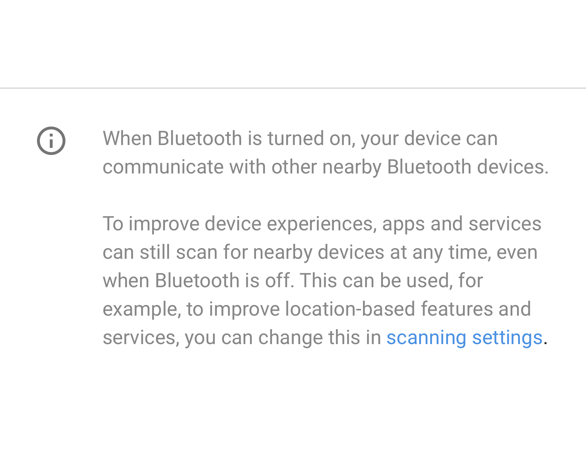
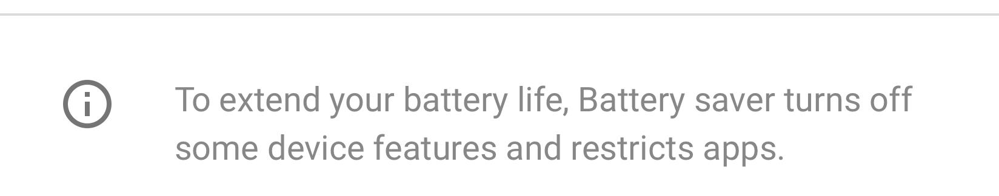
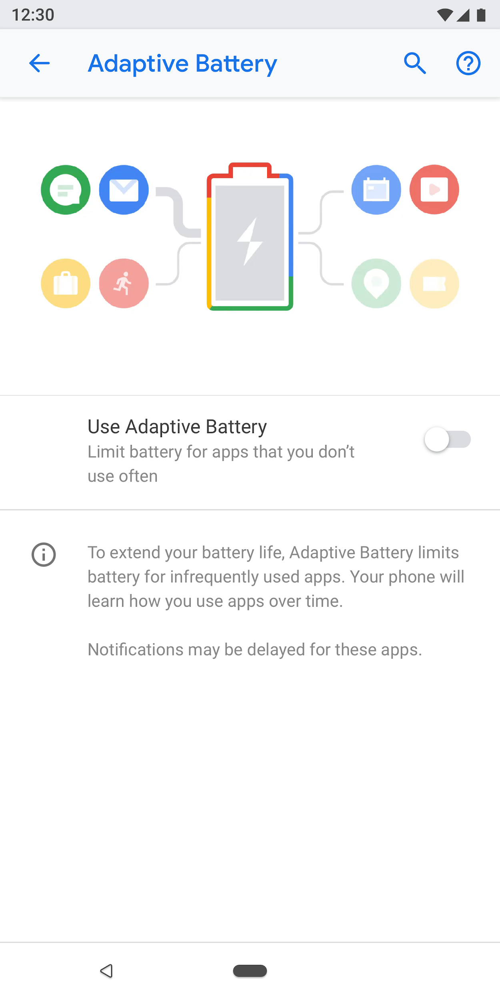

This document highlights the principles and guidelines for anyone who is either designing Android platform settings, GMS core settings (Google Settings) or any developers designing settings for their Android app.
Design principles
Provide a good overview
Users should be able to glance at settings screens and understand all of the individual settings and their values.

Figure 1. Settings and their current values are presented on the top-level screen
Organize items intuitively
Place frequently used settings at the top of the screen. Limit the number of settings on one screen. Showing more than 10-15 items can be overwhelming. Create intuitive menus by moving some settings to a separate screen.
Figure 2. Common settings are at the top of the screen
Make settings easy to find
In some cases, it may be helpful to duplicate an individual setting on two different screens. Different situations can trigger users to change a setting, so including the setting in multiple places will help users find this item.
For duplicate settings, create a separate screen for the setting and have entry points from different places.
|  |
Figure 3 & 4. "Default notification sound" appears on both the "Notification" and "Sound" screens
Use a clear title and status
Make your settings' titles brief and meaningful. Avoid using vague titles like "General settings." Below the title, show the status to highlight the value of the setting. Show the specific details instead of just describing the title.
Titles should:
- Put the most important text of your label first.
- Rephrase negative words like "don't" or "never" into neutral terms such as "block."
- Use impersonal labels like "Notifications" instead of "Notify me." Exception: If referring to the user is necessary for understanding the setting, use the second person ("you") rather than the first person ("I").
Titles should avoid:
- Generic terms, such as set, change, edit, modify, manage, use, select, or choose.
- Repeating words from the section divider or subscreen title.
- Technical jargon.
Page types
Settings list
This is the most common type of screen. It allows multiple settings to be placed together. Settings lists can be a mix of controls, like switches, menus, and sliders.
If there are many settings in one category, they can be grouped together. See Grouping & dividers for more details.
Figure 5. Example of settings list
List view
The list view is used to show a list of items like apps, accounts, devices, and more. Controls to filter or sort can be added to the screen.
Figure 6. Example of List view
Entity screen
The entity screen is used to present settings of a distinct item like an app, account, device, Wi-Fi network, etc.
Visually, the entity is shown at the top with an icon, title, and subtitle. All settings on this screen must be related to this entity.

Figure 7. Example of Entity screen used in App info
Figure 8. Example of Entity screen used in Storage
Master setting
The master setting is best used when an entire feature can be turned on or off, such as Wi-Fi or Bluetooth. By using a switch at the top of the screen, the user can easily control this feature. Using the master setting to disable the feature disables all other related settings.
If a feature needs a longer text description, the master setting can be used as this screen type allows for longer footer text.
If a setting needs to be duplicated or linked from multiple screens, use the master setting. Since the master setting is a separate screen, you'll avoid having multiple switches in different places for the same setting.

Figure 9. Example of master setting used in App notifications screen; turning off the master toggle will turn of the entire feature for this app
Figure 10. Example of master setting used in App notifications screen with master toggle turned off
Radio button selection screen
This screen is used when the user needs to make a selection for a setting. Radio buttons can either be shown in a dialog or on a separate screen. Radio buttons should not be used alongside sliders, menus, or switches.
A radio button screen can contain an image at the top and footer text at the bottom. The individual radio buttons can have subtext along with a title.

Figure 11. Radio buttons should not be used in settings list
Figure 12. This is how to use radio buttons correctly in settings
Components
Header
Starting in Android 8.0, the action toolbar presents search and help along with other related actions. Overflow menus are discouraged as users may not discover actions hidden in these menus.
For toolbars with no screen-specific actions. Show search and help actions.

Figure 13. Toolbar with search and help actions
For toolbars with one action: Present the action before search.
Figure 14. Toolbar with one action before the search and help actions
For toolbars with more than 1 action: Consider placing the primary action before search, while putting advanced actions in the overflow menu.
If all actions are advanced or only useful for a small set of users, consider placing all actions in the overflow menu.
Figure 15. Toolbar with an overflow menu for actions
Entity header
The entity header can show a heading only, or heading with subtext (multiple lines are allowed for the subtext). The action below is optional. You can have a maximum of two actions.

Figure 16. Entity header
The icon and heading (App1) part will scroll under the header (App info).

Figure 17. App info title here is part of the toolbar, while the rest of the screen will scroll under it
Menu link
The title is mandatory. You should also show subtext that highlights the status of the setting. Using an icon is optional.
Try to keep title text concise. If titles are long, they can continue on the next line instead of being truncated. Don't enable menus or actions on long press.
Examples:
Figure 18. Menu link with icon, title, and subtext
Figure 19. Menu link with title and subtext
Figure 20. Menu link with title only
Menu link with icon, title, subtext and a separate hit target on the right
Other tap targets should use the theme color.

Figure 21. Example of two-tap target menu
Menu link with icon, title, subtext and stats/number/alert icon
Numerical values like percentage and time can be shown on the right along with the subtext, while a bar graph can be shown below.
Usually, the numerical values are presented on the right so users can easily glance and compare them.
Figure 22. Example of menu with icon, title, stat and graph
Grouping & dividers
If a screen has many settings, they can be grouped and separated by a divider. Unlike older Android versions, dividers are now used to cluster settings in a group, rather than separating individual settings.
If the settings in a group are closely related, you can add a group heading. If you use a group heading, you should always include a divider.

Figure 23. Settings grouped with dividers
Switch
Switch with icon, title, and subtext
Figure 24. Switch with icon, title, and subtext
Switch with title and subtext

Figure 25. Switch with title and subtext
Switch with title only
Titles can be accompanied by an icon on the left.
Figure 26. Switch with title only
List item + switch
You can combine a list item with a switch. Tapping on the left side of the vertical line acts like a link and takes the user to the next screen. The right side behaves like a standard switch.
For the list item on the left side, a title is mandatory. The icon and subtext are optional.
Figure 27. List item and a switch
Slider
The icon is optional in the slider.

Figure 28. Slider
On-screen button
Positive actions use the theme color while negative actions are gray. Positive actions may include opening an app, installing an app, adding a new item, etc. Negative actions include clearing data, uninstalling an app, deleting items, etc.
Figure 29. Gray buttons for "Uninstall" and "Force stop"
Figure 30. Blue button for "Turn on now"
Progressive disclosure (Advanced)
Settings that are not frequently used should be hidden. Use "Advanced" only when there are at least 3 items to hide.
Here, the subtext shows the titles of the settings that are hidden. The subtext should be only one line. Additional text gets truncated with an ellipsis.
Figure 31. Advanced used on the "Display'" screen
Drop-down menu
Drop-down menus are available, but ideally you should use a dialog or radio button selection screen instead. This is recommended to simplify settings, as there are currently three different patterns for single selection.
If needed, drop-down menus can be used in cases where the setting has simple options.
Figure 32. Drop-down menu
Checkbox
Use switches over checkboxes when possible.
Checkboxes can be used:
- For negative actions like restricting apps or blocking a service.
- To avoid having too many switches on the screen.
Figure 33. Checkboxes are used to reduce the number of switches on this screen
Links
Using links in settings is not recommended. Only use links where absolutely necessary. Links should use an accent color with no underline.

Figure 34. Link used in settings
Footer
Footer text can be used to add explanatory content. The footer should always have a divider at the top. The footer is shown at the bottom of the screen. Footers can have links, if needed.

Figure 35. Footer text
Patterns
Data
Critical data can be shown in a graph like a bar or pie chart. This data can be shown in the entity header. Examples include mobile data and storage.
Other less critical data can be presented by using a regular list view.

Figure 36. Example showing Storage

Figure 37. Example showing Network
User education
Some features may need an explanation or user education. You can use an animation or image along with text. The animation or image should be presented at the top of the screen, while the footer text can be used to add an explanation.

Figure 38. Setting using animation and footer text
Forms
If the form has one input field, use a normal dialog. This provides an easy way for users to enter a single input.
However, if the form has several fields, consider using a full-screen dialog. This provides more screen space to arrange the fields in a clear pattern.
Figure 39. Form with a normal dialog
Search results
Search results show the title, subtext (if available), and the breadcrumb location of the setting.
Figure 40. Search result